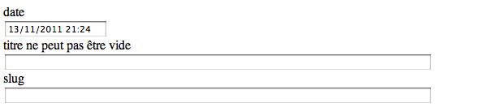

Spring MVC
Spring MVC
Les conteneurs de servlets sont des outils très puissants et très ouverts.
Mais il ne serait pas pratique de construire une application riche avec des servlets.

Les frameworks MVC pour le web apportent les fonctionnalités manquantes.
Nous allons travailler avec spring MVC, le module MVC du framework spring.
Mise en place
En premier, on rajoute les librairies pour spring mvc.
<dependency>
<groupId>org.springframework</groupId>
<artifactId>spring-web</artifactId>
<version>3.0.5.RELEASE</version>
<scope>compile</scope>
</dependency>
<dependency>
<groupId>org.springframework</groupId>
<artifactId>spring-webmvc</artifactId>
<version>3.0.5.RELEASE</version>
<scope>compile</scope>
</dependency>
<dependency>
<groupId>javax.servlet</groupId>
<artifactId>jstl</artifactId>
<version>1.1.2</version>
<scope>compile</scope>
</dependency>
Dans le web.xml, on rajoute la servlet spring. Elle reçoit toutes les requêtes.
<!-- Spring servlet -->
<servlet>
<servlet-name>spring</servlet-name>
<servlet-class>org.springframework.web.servlet.DispatcherServlet</servlet-class>
<load-on-startup>1</load-on-startup>
</servlet>
<servlet-mapping>
<servlet-name>spring</servlet-name>
<url-pattern>/</url-pattern>
</servlet-mapping>
Au démarrage de tomcat, cette servlet va aller charger un contexte spring (/WEB-INF/spring-servlet.xml) qu'il nous faut définir.
<?xml version="1.0" encoding="UTF-8" standalone="no"?>
<beans xmlns="http://www.springframework.org/schema/beans"
xmlns:context="http://www.springframework.org/schema/context"
xmlns:mvc="http://www.springframework.org/schema/mvc"
xmlns:tx="http://www.springframework.org/schema/tx"
xmlns:p="http://www.springframework.org/schema/p"
xmlns:aop="http://www.springframework.org/schema/aop"
xmlns:xsi="http://www.w3.org/2001/XMLSchema-instance"
xsi:schemaLocation="
http://www.springframework.org/schema/beans http://www.springframework.org/schema/beans/spring-beans-3.0.xsd
http://www.springframework.org/schema/context http://www.springframework.org/schema/context/spring-context-3.0.xsd
http://www.springframework.org/schema/mvc http://www.springframework.org/schema/mvc/spring-mvc-3.0.xsd
http://www.springframework.org/schema/tx http://www.springframework.org/schema/tx/spring-tx-3.0.xsd
http://www.springframework.org/schema/aop http://www.springframework.org/schema/aop/spring-aop-3.0.xsd">
<!-- Support des annotations -->
<context:annotation-config />
<!-- Création de composants classiques pour spring mvc -->
<mvc:annotation-driven />
<!-- Forwarde les demandes de fichiers statiques vers la servlet par défaut du conteneur -->
<mvc:default-servlet-handler />
<!-- Définition de la Locale pour les opération de formattage -->
<bean id="localeResolver" class="org.springframework.web.servlet.i18n.FixedLocaleResolver">
<property name="defaultLocale" value="fr_FR" />
</bean>
<!-- Configuration de la technologie de rendu -->
<bean id="viewResolver" class="org.springframework.web.servlet.view.UrlBasedViewResolver">
<property name="viewClass" value="org.springframework.web.servlet.view.JstlView" />
<property name="prefix" value="/WEB-INF/jsp/" />
<property name="suffix" value=".jsp" />
</bean>
</beans>
Il est temps de rajouter notre premier Controller.
HelloController
Nous définissons la classe HelloController dans le package edu.ecm.blog.web.controller.
@Controller
public class HelloController {
@RequestMapping("/hello")
public String hello(Model model) {
model.addAttribute("name", "Steven");
return "hello";
}
}
L'annotation @Controller indique a spring que ce composant est un composant spécial qui répond aux requêtes http.
L'annotation @RequestMapping fait la liaison entre l'url du service et la méthode cible de la classe.
Le Model est ce qui est rempli par le Controller et transmis à la vue.
Le retour "hello" va être mappé pas le viewResolver (avec le prefix et suffix de la configuration spring) et interpreté comme /WEB-INF/jsp/hello.jsp.
La création d'un Controller est une opération simple et les annotations apportent de la souplesse.
Afin que ce composant soit chargé, il faut le définir dans le contexte. Comme nous allons faire plusieurs Controller, nous utilisons un scan de package.
<context:component-scan base-package="edu.ecm.blog.web.controller" />
Le Controller devrait répondre sur http://localhost:8080/hello en lançant l'application avec la commande mvn tomcat:run.
La home page
Pour notre home, nous allons utiliser le template index.jsp à placer dans WEB-INF/jsp.
La feuille de style est style.css à placer dans src/main/webapp/css afin que le lien depuis la jsp soit valide.
Le Controller associé est le suivant.
@Controller
public class IndexController {
@RequestMapping("/index")
public String index() {
return "index";
}
}
Pour le moment, les données sont en dur dans la jsp, mais http://localhost:8080/index est disponible.
Les services
Nous allons maintenant ajouter nos services dans le contexte spring afin de les rendre accessibles depuis les Controllers.
Comme pour les Controllers, nous allons utiliser un scan.
<context:component-scan base-package="edu.ecm.blog.service"/>
Et les 2 implémentations des services doivent être annoté avec @Service
@Service public class PostServiceImpl implements PostService
Ainsi les services du package seront chargés dans le contexte spring au démarrage de l'application.
Les services sont chargés mais cela produit une erreur car aucune session factory n'est présente dans notre contexte spring.
La base de données
Comme pour les tests unitaires, il manque la définition de la session factory et de la connexion à la base.
<!-- pool de connexion -->
<bean id="dataSource" class="org.apache.commons.dbcp.BasicDataSource" destroy-method="close">
<property name="driverClassName" value="org.apache.derby.jdbc.EmbeddedDriver"/>
<property name="url" value="jdbc:derby:target/blogdb;create=true"/>
<property name="username" value=""/>
<property name="password" value=""/>
</bean>
<!-- factory bean pour la SessionFactory hibernate -->
<bean id="sessionFactory" class="org.springframework.orm.hibernate3.annotation.AnnotationSessionFactoryBean">
<property name="dataSource" ref="dataSource"/>
<property name="hibernateProperties">
<bean class="org.springframework.beans.factory.config.PropertiesFactoryBean">
<property name="properties">
<props>
<prop key="hibernate.dialect">org.hibernate.dialect.DerbyDialect</prop>
<prop key="hibernate.hbm2ddl.auto">update</prop>
</props>
</property>
</bean>
</property>
<property name="packagesToScan" value="edu.ecm.blog.domain"/>
</bean>
<!-- ajoute un gestionnaire de transactions lié à la sessionFactory -->
<bean id="transactionManager" class="org.springframework.orm.hibernate3.HibernateTransactionManager">
<property name="sessionFactory" ref="sessionFactory"/>
</bean>
<!-- active le support des annotations @Transactional -->
<tx:annotation-driven transaction-manager="transactionManager"/>
La configuration est quasi identique à la configuration des tests.
Pour une application réelle, nous n'utiliserions pas une base embarquée.
Nous utiliserions une url qui pointe vers la base comme par exemple : jdbc:mysql://host:3306/blogdb.
Bootstrap
En l'état, l'application démarre sans erreur mais les données sont toujours en dur dans la page jsp.
Afin de pouvoir afficher des données dans la page, nous allons initialiser la base de données au démarrage de l'application.
Dans la classe IndexController on rajoute une méthode bootstrap
@PostConstruct
public void bootstrap() {
}
@PostConstruct est une annotation java standard qui marque une méthode a appeler après la construction du composant.
L'appel est fait après injection des dépendances.
L'alter ego de @PostConstruct est @PreDestroy, appelé juste avant la destruction du composant.
En injectant le PostService dans le Controller, implémenter le pseudo code suivant :
if (pas de billet) {
créer 3 billets en remplissant tous les champs (sauf l'auteur)
}
L'injection des valeurs dans le Model
Afin d'injecter notre attribut dans le modèle, il suffit de demander le modèle à Spring
@RequestMapping("/index")
public String index(Model model) {
return "index";
}
Il existe plusieurs façons d'interagir avec le Model et celle-ci est la plus simple.
Il reste donc a ajouter les 10 derniers billets dans le modèle.
model.addAttribute("posts", postService.find(0, 10));
La jsp
La jsp correspond à l'étape de rendu. On y produit le code html.
Les jsp dispose de 2 outils principaux pour mettre en forme :
- L'expression language (EL) : une notation qui permet de naviguer dans les propriétés des objets
- La java standard tag lib (JSTL) : une notation xml qui permet d'appeler du code java
On peut également définir et utiliser ses propres tag libs.
Un bon tutorial sur la jstl est disponible sur le site de developpez.com
Afin de pouvoir utiliser la jstl, il faut ajouter une librairie d'implémentation dans le pom.xml
<dependency> <groupId>taglibs</groupId> <artifactId>standard</artifactId> <version>1.1.2</version> <scope>compile</scope> </dependency>
Et déclarer les taglibs utilsées en haut du fichier jsp.
<%@ taglib uri="http://java.sun.com/jsp/jstl/core" prefix="c" %> <%@ taglib uri="http://java.sun.com/jsp/jstl/fmt" prefix="fmt" %>
En utilisant les notations suivantes, mettre en forme la jsp afin qu'elle produise la liste des billets.
L'itération :
<c:forEach var="post" items="${posts}">...</c:forEach>
L'expression language :
${post.title} ${post.text} ${post.tags} ${post.author.name}
Le formattage de date :
<fmt:formatDate value="${post.date}" pattern="dd MMM yyyy à HH'h'mm"/>
La liste des billets n'est donc plus qu'une itération dans un attribut du modèle.
La page de billet
La page du billet est assez similaire à la page d'index.
Le template de la page est le même avec un unique billet.
Nous pouvons créer une seconde méthode dans le Controller.
@RequestMapping("/billet/{slug}")
public String post(@PathVariable String slug, Model model) {
model.addAttribute("post", postService.findBySlug(slug));
return "post";
}
Le mapping contient une partie qui correspond à un paramètre de la méthode.
Et nous avons ajouté une méthode à notre service.
Il reste donc plusieurs choses à faire :
- implémenter la méthode findBySlug()
- intégrer le template html
- rajouter des liens sur les titres des billets de la home page vers la page de billet
Le Controller faisant maintenant un peu plus que la page d'index, nous pouvons le renommer BlogController.
Il s'agit d'un refactoring utile qui permet au nom du composant d'être en phase avec son utilité.
Les annotations facilitent ces refactorings.
La gestion des billets
Nous allons construire un CRUD (Create Request Update Delete) pour les billets.
Nous commençons par créer un nouveau Controller
@Controller
public class AdminController {
}
Celui va devoir supporter les opérations suivantes :
- Liste des billets actuellement en base avec un lien "nouveau"
- Le formulaire pour un nouveau billet
- La sauvegarde du nouveau billet
- Le formulaire pour l'édition d'un billet
- La sauvegarde d'une billet
- La suppression d'un billet
La liste des billets
Ecrire une méthode qui réponde sur /admin/posts qui injecte la totalité des billets dans le modèle.
Cette méthode doit ensuite rediriger vers la vue /WEB-INF/jsp/admin/posts.jsp/
En s'inspirant de la page d'index, écrire le fichier jsp en le remplissant avec la liste des titres des billets.
Le lien sur le titre du billet doit pointer vers /admin/post/{id du billet}.
Un lien en haut de la jsp doit pointer vers /admin/post avec un texte "nouveau".
Un nouveau billet
On ajoute une méthode au Controller pour la création d'un nouveau billet.
@RequestMapping("/admin/post")
public String post(Model model) {
// on injecte un Post vierge dans le modèle
model.addAttribute("post", new Post());
return "admin/post";
}
La vue est un formulaire qui permet d'éditer les attributs du billet.
On y trouve l'appel à la taglib de spring pour les formulaires.
<%@ taglib prefix="form" uri="http://www.springframework.org/tags/form" %>
Le formulaire qui reprend le nom du bean dans le modèle, l'url cible et la méthode HTTP.
<form:form commandName="post" action="/admin/post" method="post">
Un champs input est facile à définir.
<form:input path="title" />
Avec un zone prévue pour afficher les messages d'erreurs.
<form:errors path="title" />
En attendant le HTML 5 (et encore, cela ne sera pas fantastique), les inputs html sont un peu limités.
Les formulaires spring sont extrêmement proche des formulaires html standards.
La gestion du POST
Coté jsp, tout est en place. Il reste a gérer la réception des données coté serveur.
Le mapping suivant permet de recevoir l'appel.
@RequestMapping(value = "/admin/post", method = RequestMethod.POST)
public String post(@ModelAttribute("post") Post post, BindingResult bindingResult, Model model) {
...
}
En recevant l'appel, spring va "binder" le contenu de la requête http à notre objet.
BindingResult contient toutes les erreurs de validation. C'est ce qui permet l'affichage des erreurs dans la jsp.
Le minimum vital pour notre billet est le titre. On fait donc une vérification et on sauve le billet en base.
IMPORT COMMONS LANGif (StringUtils.isEmpty(post.getTitle())) {
bindingResult.rejectValue("title", "field.empty", "Le titre est obligatoire");
return "admin/post";
}
postService.save(post);
return "redirect:/admin/posts";
StringUtils vient de la librairie commons lang qu'il faut ajouter au pom
<dependency>
<groupId>commons-lang</groupId>
<artifactId>commons-lang</artifactId>
<version>2.6</version>
<scope>compile</scope>
</dependency>
Si on tente de sauvegarder un billet en l'état, nous avons un message d'erreur nous indiquant que spring ne parvient pas a convertir une chaîne de caractères en date.
Failed to convert property value of type java.lang.String to required type java.util.Date for property date; nested exception is org.springframework.core.convert.ConversionFailedException: Unable to convert value "" from type java.lang.String to type java.util.Date; nested exception is java.lang.IllegalArgumentException
En effet spring n'adopte pas de convention par défaut et ne sait pas quel est le format littéral d'une date.
Il faut alors configurer le binder dans notre Controller.
@InitBinder
public void binder(WebDataBinder binder) {
SimpleDateFormat sdf = new SimpleDateFormat("dd/MM/yyyy HH:mm");
binder.registerCustomEditor(Date.class, new CustomDateEditor(sdf, true));
}
Le format de date est donc "dd/MM/yyyy HH:mm" et il est possible d'avoir une date vide.
Désormais, la sauvegarde fonctionne.
Afin de nous simplifier l'édition, on peut d'ailleurs initialiser le champs date à la date courante dans le modèle.
@Column @Temporal(TemporalType.TIMESTAMP) private Date date = new Date();
L'édition
A ce point, l'édition d'un billet est simple. Il faut ajouter le mapping dans le Controller.
@RequestMapping("/admin/post/{id}")
public String post(@PathVariable Long id, Model model) {
// on injecte le post
model.addAttribute("post", postService.findById(id));
return "admin/post";
}
Il faut créer la méthode findById dans le service afin que ce code fonctionne.
Dans le cas de l'édition d'un billet, on utilise le même formulaire.
Il faut juste rajouter le champs id afin que le celui-ci soit renvoyé au moment du post du formulaire.
<form:hidden path="id" />
Un dernier point : la méthode save de PostServiceImpl fait un session.save(post). Cela crée un nouvel enregistrement en base même si le billet a un déjà un id.
On remplace session.save(post) par session.saveOrUpdate(post) et l'édition de billet fonctionne.
La suppression
Rajouter un mapping sur /admin/post/{id}/delete qui supprime un post.
Ajouter un lien pour chaque billet dans le listing.
Un peu d'ordre
En jouant avec l'édition des billets, on observe qu'ils ne sont pas classés par date.
Cela se corrige simplement en ajoutant une clause order dans la méthode find du service :
criteria.addOrder(Order.desc("date"));
Les billets les plus récents sont en premier.
JSR 303
Nous avons effectué la validation dans le Controller.
Cette possibilité est simple mais deviendrait dense si il fallait valider beaucoup de champs.
Nous allons maintenant utiliser une technique beaucoup plus concise : la JSR 303 (spécification bean validation).
Tout d'abord, il faut importer une librairie d'implémentation de la spécification.
<!-- hibernate validator -->
<dependency>
<groupId>org.hibernate</groupId>
<artifactId>hibernate-validator</artifactId>
<version>4.2.0.Final</version>
<scope>compile</scope>
</dependency>
Hibernate validator est la spécification de référence.
Nous pouvons alors modifier l'AdminController
@RequestMapping(value = "/admin/post", method = RequestMethod.POST)
public String post(@ModelAttribute("post") @Valid Post post, BindingResult bindingResult, Model model) {
if (StringUtils.isEmpty(post.getTitle())) {
bindingResult.rejectValue("title", "field.empty", "Le titre est obligatoire");
return "admin/post";
}
if (bindingResult.hasErrors()) {
return "admin/post";
}
postService.save(post);
return "redirect:/admin/posts";
}
L'annotation @Valid indique a spring qu'il doit exécuter un validateur sur l'attribut.
Il nous suffit alors d'annoter le champs title de la class Post :
@Column @NotEmpty private String title;
En tant qu'implémentation de la JSR 303, hibernate validator vient avec la prise en charge des annotations et un jeu de messages d'erreur localisé.
Il est maintenant très simple de rajouter d'autres @NotEmpty ou bien @Length ou @Email.
Il est même possible d'écrire ses propres annotations afin de rendre réutilisable simplement ses éléments de validation.
En peu de recul
L'utilisation des Controllers est simple mais il nous a fallu bien des librairies et quelques fichiers de configuration pour arriver à ce résultat.
Dans le cadre d'un projet maven + spring mvc, obtenir sa première page n'est pas instantané.
D'autres frameworks (rails, grails, roo, play...) offrent un démarrage rapide et beaucoup de vitesse pour les besoins classiques (le CRUD est un des exemples courants)
Spring mvc de son coté est un peu plus lourd à manipuler mais est d'une très grande flexibilité.
Selon les projets, on peut donc choisir la technologie la plus adaptée.
Le reste
Il resterait beaucoup a faire afin d'avoir une application complète.
Voici quelques pistes / questions pour la suite :
- La page d'index est /index. Comment pourrait on faire pour que / réponde également comme page d'index ?
- Comment devrait on gérer la pagination ? Quelle ergonomie dans la page ? Quelles modifications dans le service ?
- Comment pourrait on gérer convenablement le bloc de tag ?
- Comment lister les billets par tags (et donc pour mettre des liens sur les tags) ?
- Comment faire fonctionner le bloc des derniers billets ?
- La gestion des auteurs est un élément délicat. Comment gérer la relation @ManyToOne dans le formulaire d'édition ? Comment gérer cela dans le controller et le service ?
- La gestion des cas d'erreur : que faire de http://localhost:8080/billet/not-existing-post ou bien http://localhost:8080/admin/post/aaa ?
- Si notre blog devait supporter beaucoup de trafic, que pourrait on faire pour l'aider à tenir la charge ?